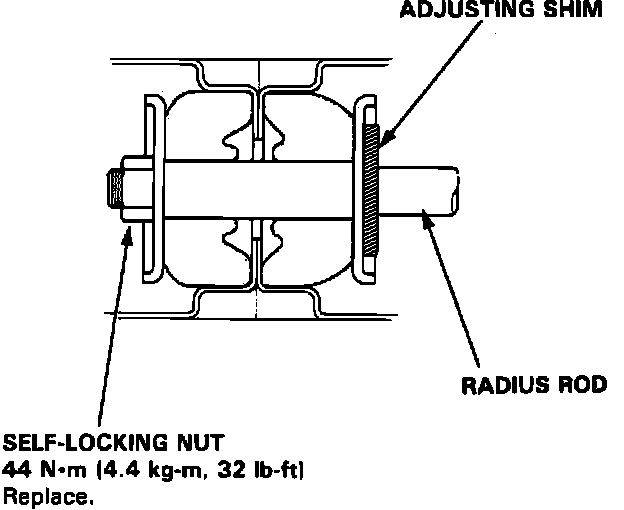

Caster
Fig. 3 Caster Angle Check:

Ensure tires are properly inflated prior to checking or adjusting caster angles.
1. Raise front of vehicle.
2. Remove radius rod self locking nut.
3. Remove radius rod attaching bolts at lower arm, then remove rod.
4. Adjust caster by increasing or decreasing shims, Fig. 3.
5. One shim changes caster angle by 5/12°, caster can be adjusted by 11/12° maximum.
6. One shim is 0.126 inch (3.2 mm) in thickness.
7. Do not use more than two shims.
8. After adjusting caster, tighten self locking nut to specifications.